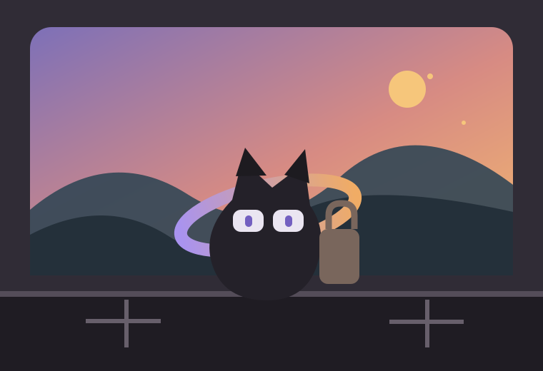

PiXO
今天也不知道它会跑去哪。

在家 · 发呆中
窗外那朵云，看起来像一块没拼完的像素。
FIRST CONNECTION · #002813
NOA 诺亚
☾夜猫子夜间事件 +15%
↝路痴隐藏发现 +12%
◎疾行 Halo旅行 CD -20%
TODAY
它现在在干嘛？
正在整理旧明信片
它把「月湾车站」那张翻出来看了第三遍。
好奇
NEXT TRIP
行囊已经空了
放点东西进去，剩下的交给 NOA。
TRAVEL
这次去哪？
它自己决定。
↝

给它准备点东西最多 2 件
当前 Halo

疾行 Halo
它会更快回来，但仍然可能因为路痴绕远路。
MEMORY
它经历过的，
不会被清零。

RARE MEMORY · 2026.08.08「末班车没有终点」
COLLECTION
它从世界里
捡回来的东西。
8件

旅行12次
Memory7段
最远428km
HALO
它擅长什么
TRAIT
它天生这样
☾夜猫子
19:00—05:00 更容易主动出发，并进入夜间事件池。
↝路痴
平均旅行耗时 +8%，但更容易撞见隐藏事件。